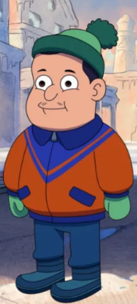
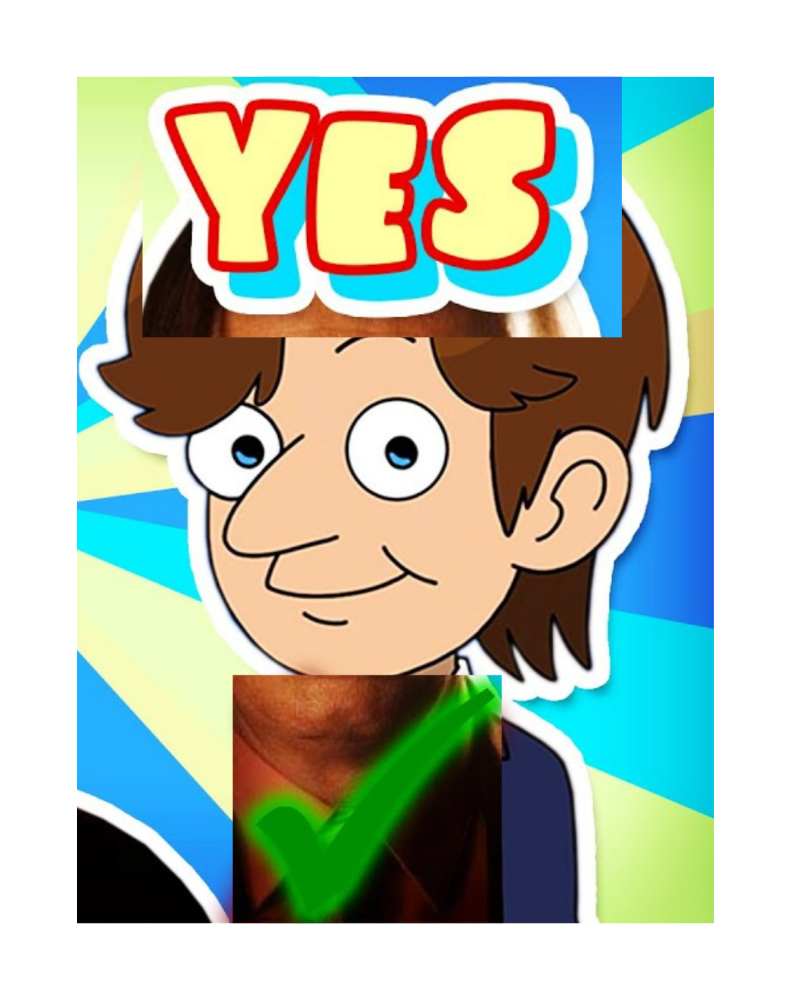

Why is "Slippin' Jimmy" so good?
The answer might shock you.

The animated TV sitcom "Slippin' Jimmy" is a show about the misadventures of Jimmy McGill and his best friend Marco Patsernak. This page alone will tell you why the animated TV sitcom "Slippin' Jimmy" is so good.
The Chracters
The characters in this show are absolutely phenominal. The voice acting, the design, it's all a 10/10. Personally, I think Marco has the best design. Look at him, he's already got some of the mustache and the beer belly that he has later on in "Better Call Saul" in which he dies from. If that's not foreshadowing and character development then I don't know what is.

The Writing
"Slippin' Jimmy" has the abslute best writing in the history of TV sitcoms, including Friends, I hate that show. It's just very other live action sitcom, like "Malcom In The Middle", or "The Big Bang Theory". "Slippin' Jimmy", however, has AMAZING writing. In episode 2 of season 1, "The Exor-Sister", Jimmy and Marco head to the rescue and make a crucifix out of chewing gum and kill Sister Beth, a nun who turned out to be a demon the whole time! What a plot twist!

The Art Style
"Slippin' Jimmy" has the best art style in animation history. It is so much better than "Family Guy" and "The Simpsons" combined, Seth MacFarlane and Matt Groening have nothing compared to the animated TV sitcom "Slippin' Jimmy". The character design is so much better than the laziness of those shows. Those two shows have almost the exact same art styles, look at Season 13 episode 1 of Family Guy, "The Simpsons Guy" for example. The two universes collide and you can tell how similar the art style is, the only difference is the skin tones, how The Simpsons has almost everyone with a yellow skin tone. Slippin' Jimmy has everyone with a natural human skin tone, and it's very diverse with it's characters, like with Tremt and his friends, they're all very different and unique, same thing with Jimmy and Marco, they're very unique characters within the art style and the design.

Conclusion
Those were the 3 main reasons why Slippin' Jimmy is the greatest TV show of all time. Of course there's many more reasons why it's so good, but I didn't want to bore you because of how many reasons there are.
______________________________________________________
Home
Characters
What is "Slippin' Jimmy?"